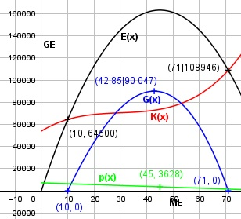

Aufgabe 101 Ein Hersteller hat neben einer Preisabsatzfunktion p(x) = -80,625x + 7256,25 eine Kostenfunktion K(x) = 0,5x3 - 45x2 + 1450x + 54 000. a) Wie hoch sind sein maximaler Gewinn und die Koordinaten des Cournotschen Punktes? b) Wo liegt seine Gewinnzone? c) Berechnen Sie sein Betriebsminimum B und seine kurzfristige Preisuntergrenze. a) E(x) = p(x) * x = = (-80,625x + 7256,25) * x = -80,625x2 + 7256,25x G(x) = -80,625x2 + 7256,25x - - (0,5x3 - 45x2 + 1450x + 54 000) G(x) = - 0,5x3 - 35,625x2 + 5806,25x - 54 000 G'(x) = - 1,5x2 - 71,25x + 5806,25 G''(x) = -3x - 71,25 < 0 für alle x > 0 --> Hochpunkt -1,5x2 - 71,25x + 5806,25 = 0 A, B, C - Formel: A = -1,5, B = -71,25, C = 5806,25 x1,2 = x1,2 = x1,2 = 71,25 ± 199,8 x1,2 = --------------- -3 x1 = 42,85 ME G(42,85) = -0,5 * 42,853 - 35,625 * 42,852 + + 5806,25 * 42,85 - 54 000 G(42,85) = 90 047 GE p(42,85) = -80,625 * 42,85 + 7256,25 = 3 802 GE/ME x2 = -90,35 keine Lösung Der maximale Gewinn beträgt 90 047 GE. Die Koordinaten des Cournotschen Punktes sind (42,85|3 802) b) -0,5x3 - 35,625x2 + 5806,25x - 54 000 = 0 Durch Probieren gefunden x1 = 10 Hornerschema: -0,5 -35,625 5806,25 -54 000 x1 = 10 -5 -406,25 54 000 ------------------------------------------ -0,5 -40,625 5 400 0 Polynomdivision: -0,5x3 - 35,625x2 + 5806,25x - 54 000 : (x - 10) -(-0,5x3 + 5x2) --------------- -40,625x2 + 5806,25x - 54 000 -(-40,625x2 + 406,25x) ------------------- 5 400x - 54 000 -(5 400x - 54 000) ------------------ 0 Ergebnis = -0,5x2 - 40,625x + 5 400 -0,5x2 - 40,625x + 5 400 = 0 |:(-0,5) x2 + 81,25x - 10 800 = 0 p, q - Formel: p = 81,25, q = -10 800 x2,3 = x2,3 = -40,625 ± x2,3 = -40,625 ± x2,3 = -40,625 ± 111,6 x2 = 71 ME = Gewinngrenze x1 = 10 ME = Gewinnschwelle Die Gewinnzone liegt zwischen 10 und 71 ME. c) Kv(x) 0,5x3 - 45x2 + 1 450x kv(x) = ------- = ------------------------ x x kv(x) = 0,5x2 - 45x + 1 450 k'v(x) = x - 45 k''v(x) = 1 > 0 --> Tiefpunkt x - 45 = 0 |+45 x = 45 ME = Betriebsminimum p(45) = -80,625 * 45 + 7 256,25 = 3 628 GE/ME = kurzfristige Preisuntergrenze
